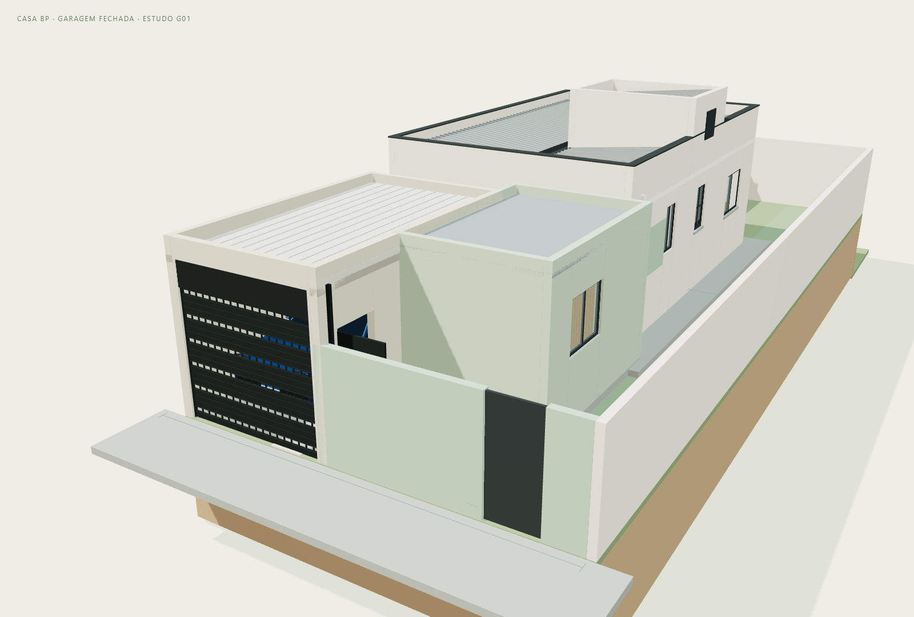
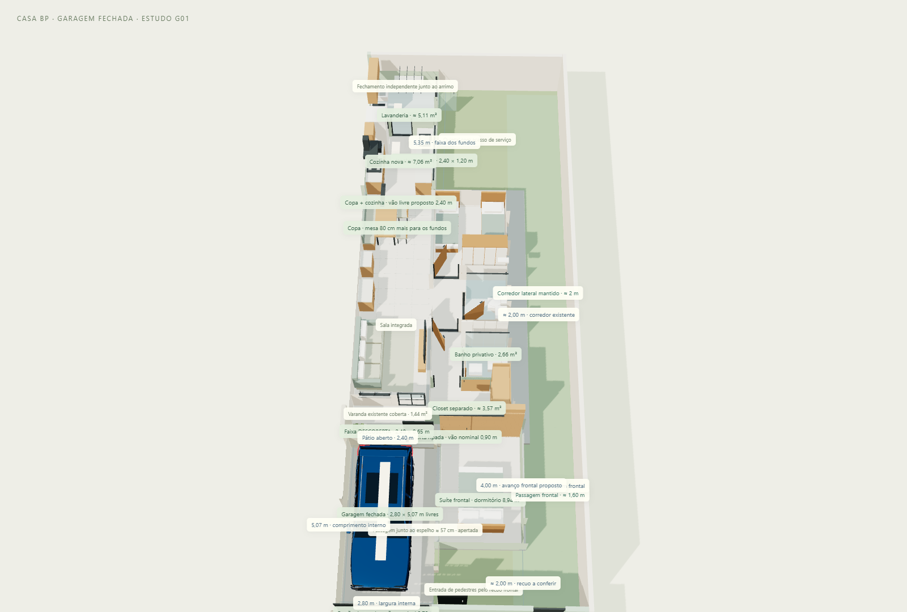
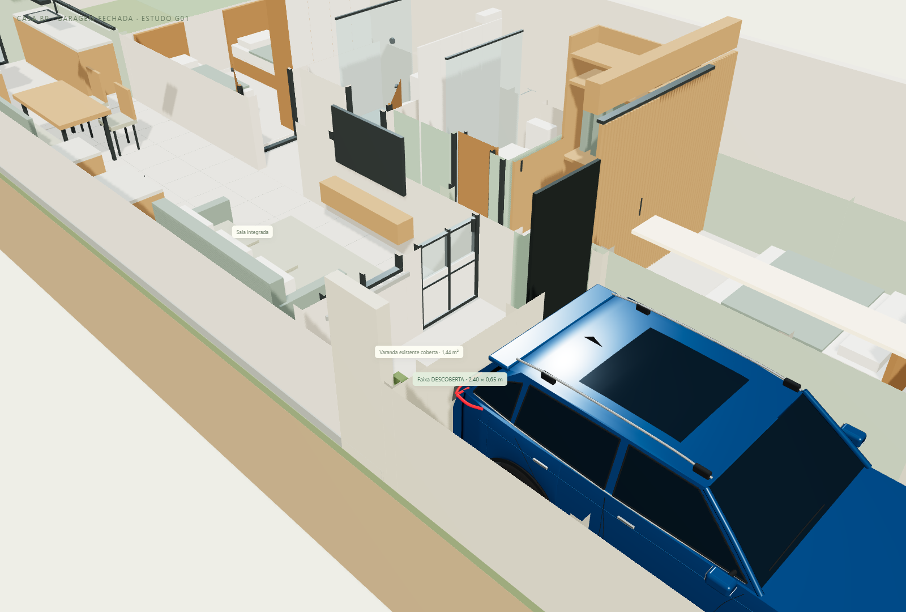

CASA BP · ALTERNATIVA G01 · 11/11/2026
A proposta escolhida, revisão 05, permanece como estava. Esta alternativa acrescenta o fechamento da vaga à esquerda do quarto ampliado, com portão de enrolar, porta de pedestres para o recuo frontal e saída de correr para um pátio descoberto. Quarto, closet separado, banheiro, copa integrada, cozinha e lavanderia são preservados.
Abrir alternativa em 3D · Comparar proposta escolhida · Baixar GLB com cobertura leve · Baixar GLB com estudo em laje

Planejar a garagem junto com a ampliação do quarto permite coordenar alturas, apoios e drenagem antes da obra. Sugiro começar pelo orçamento de uma cobertura leve termoacústica, atrás de uma platibanda alinhada à suíte. Ela tende a exigir menos peso próprio que uma laje de concreto, mas o custo final depende dos vãos, apoios, mão de obra e acabamentos locais; não há orçamento neste estudo.
O botão Estudo em laje mostra a alternativa de volume, sem promessa de viabilidade estrutural. A cobertura do quarto no modelo anterior é ilustrativa: não comprova a existência, capacidade ou armadura de uma laje. Se optar por lajes nos dois volumes, projetar fundações, vigas, pilares, juntas, impermeabilização e encontro entre eles em conjunto. Não presumir apoio nos muros de divisa, no arrimo ou balanço a partir da laje do quarto. A alternativa não prevê terraço, pavimento superior ou uso sobre a cobertura.
| Elemento | Dimensão nominal | Observação |
|---|---|---|
| Terreno informado | 7,50 × 20,00 m | Posição da casa no lote precisa de levantamento. |
| Garagem interna | 2,80 × 5,07 m · 14,196 m² | Entre faces de paredes, antes de tolerâncias de execução. |
| Projeção adicional desta alternativa | 16,009 m² | Inclui fechamentos; desconta a parede compartilhada já prevista com a suíte. |
| Novas projeções somadas | 41,627 m² | Suíte e fundos: 25,618 m²; garagem: 16,009 m². Não é área legal aprovada. |
| Portão de enrolar | 2,70 × 2,30 m | Vão nominal, ferragens e caixa a detalhar com fabricante. |
| Porta de pedestres lateral | 0,90 × 2,10 m nominal | Abre para o recuo frontal do próprio lote, sem varrer a vaga. |
| Porta de correr para o pátio | 0,90 × 2,10 m nominal | Folha estaciona à esquerda, do lado do pátio. |
| Faixa principal descoberta | 2,40 × 0,65 m · 1,56 m² | Mais um pequeno nicho aberto de circulação. A varanda existente de 2,40 × 0,60 m (1,44 m²) continua coberta; não está incluída na faixa descoberta. |
| Altura externa da platibanda | Cota superior +3,02 m | Alinhada à representação da ampliação do quarto. |
| Corredor lateral direito | 1,60 m junto à suíte; 2,00 m junto à casa | Preservado, assim como o quintal. |
O carro mantém a posição da proposta escolhida: 4,304 m de comprimento, 1,791 m de carroceria e 2,057 m com espelhos. A folga longitudinal geométrica é de aproximadamente 57 cm até o portão frontal e 20 cm até a parede de fundo, com o carro fechado. Junto ao espelho direito, a passagem é de aproximadamente 57 cm; do lado esquerdo, cerca de 17 cm. Na carroceria, as folgas são de aproximadamente 70 e 30 cm, respectivamente.
A porta de pedestres é separada do portão do carro, mas o caminho até a sala passa pela garagem, ao lado do veículo. Não há corredor independente nem passagem acessível. A abertura das portas da Tracker e a manobra ainda precisam ser testadas no local; o modelo verifica o carro estacionado com portas fechadas. Há um desnível de 14 cm da garagem para o pátio, que deve receber solução de piso e soleira no projeto executivo.

Entre a garagem e a fachada da sala há 1,25 m de profundidade livre: 0,65 m de faixa descoberta e 0,60 m da varanda existente coberta pela laje original. A cobertura existente foi preservada; os 3,00 m² dessa área somada não são integralmente descobertos. A janela e a porta da sala continuam voltadas para a varanda, que se abre para a faixa externa, em vez de diretamente para a garagem. Haverá perda de visão de céu em relação à vaga totalmente aberta. A faixa aberta é estreita e a parede da garagem pode sombrear a janela; não se garante quantidade de luz suficiente com base no render. Se essa perda for excessiva no levantamento, recomendo manter uma garagem mais aberta ou rever o fechamento com o arquiteto antes de construir.
A copa permanece dependente da entrada de luz pela frente e pela cozinha, com a opção de tubo solar da proposta escolhida. Orientação solar, sombras dos vizinhos e avaliação de luz natural ainda precisam ser levantadas; a luz do visualizador é de apresentação, sem simulação solar calibrada.
O portão tem grelhas permanentes voltadas para a rua. O vidro alto entre garagem e pátio é fixo. A porta entre os espaços deve prever vedação apropriada; a área livre de ventilação e eventual exaustão precisam ser projetadas, evitando conduzir gases para a sala. Referência técnica de princípios de separação e ventilação de garagens, PNNL; os parâmetros normativos estrangeiros não foram adotados como regras brasileiras.
A cobertura leve indica caimento para a frente e calha; a opção em laje mostra camada de impermeabilização e ralo ilustrativos. O condutor fica voltado ao próprio lote. Confirmar capacidade, caimentos, destino pluvial e drenagem do pátio sem descarregar no vizinho, na passagem ou junto a fundações. Não há dimensionamento hidráulico.

Conferir levantamento do lote e níveis, permissão municipal/condominial para cobrir e fechar o recuo frontal, área permeável, estrutura da casa e da ampliação, fundações, fechamento junto às divisas, ventilação, instalações e manobra. Os elementos de apoio no 3D apenas indicam intenção arquitetônica; não são seções estruturais calculadas. O arrimo informado permanece como estimativa de 2 m de contenção abaixo do lote mais 2 m de muro acima, sem validação estrutural ou autorização de apoio nele.
Arquivo independente com mobiliário e Tracker preservados. Os controles permitem alternar cobertura leve/laje, abrir o portão, abrir a porta do pátio e explorar o restante da casa. O GLB exportado contém apenas a opção de cobertura selecionada e o estado atual das portas; o arquivo padrão foi salvo com cobertura leve, portão fechado e tubo solar desligado.